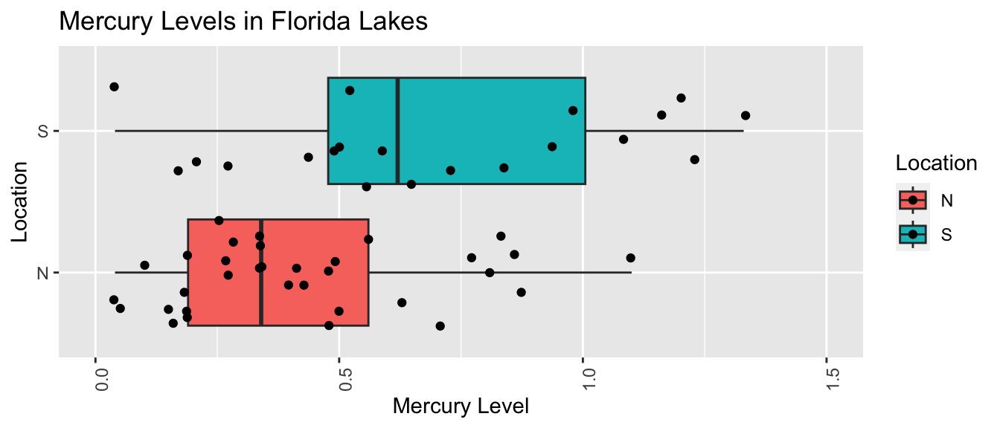
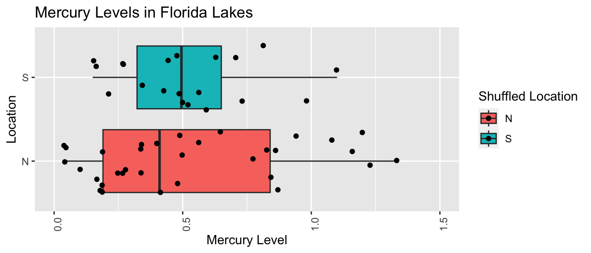
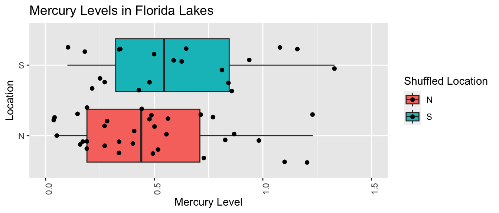
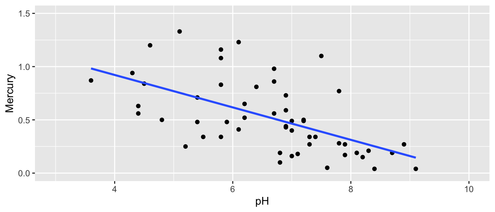
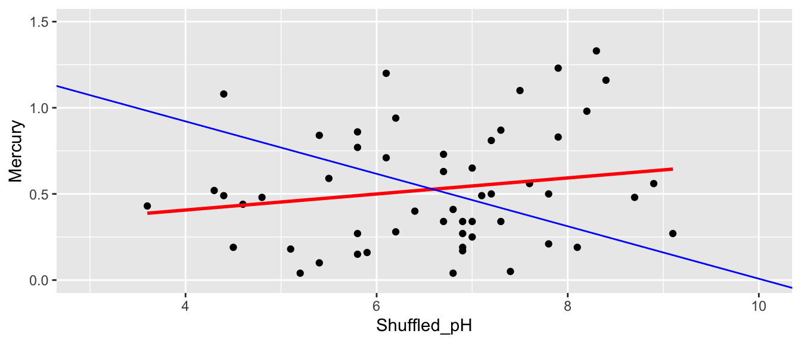
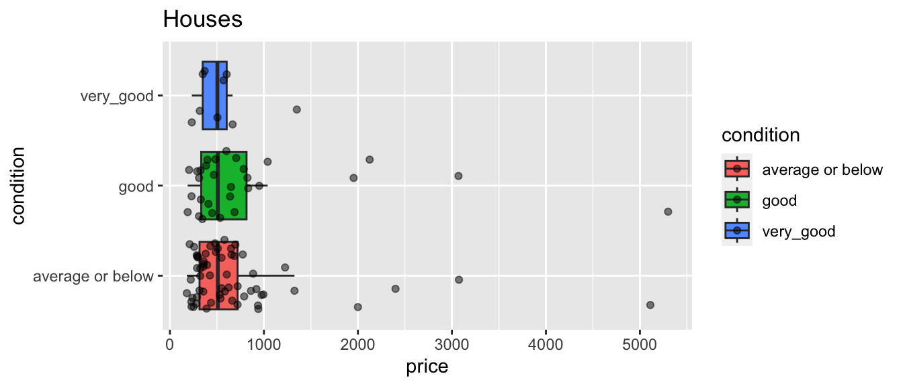
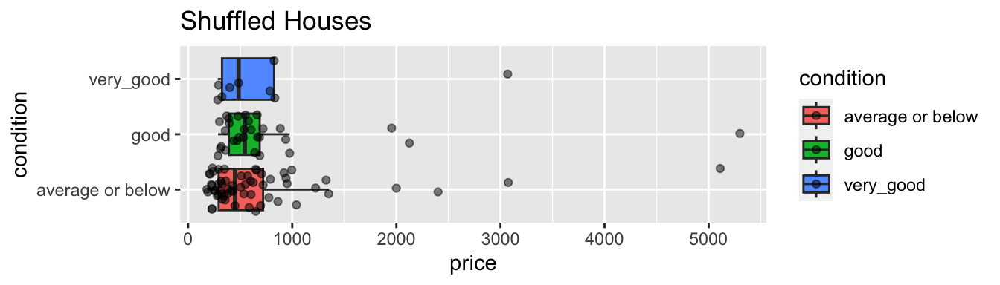

Chapter 3 Hypothesis Testing via Permutation
Learning Outcomes:
- State null and alternative hypotheses associated with models involving categorical and quantitative explanatory variables.
- Explain how to use permutation tests for hypotheses involving means, medians, F-statistics, slopes, proportions, and other regression coefficients, as well as functions of these statistics.
- Interpret p-values in context.
- Explain the conclusions we should draw from from a hypothesis test, while accounting for other information available in a dataset.
- Distinguish between statistical significance and practical importance.
3.1 Test for Difference in Means
3.1.1 Mercury Levels in Florida Lakes
A 2004 study by Lange, T., Royals, H. and Connor, L. examined Mercury accumulation in large-mouth bass, taken from a sample of 53 Florida Lakes. If Mercury accumulation exceeds 0.5 ppm, then there are environmental concerns. In fact, the legal safety limit in Canada is 0.5 ppm, although it is 1 ppm in the United States.
In our sample, we have data on 53 lakes, out of more than 30,000 lakes in the the state of Florida. We’ll attempt to draw conclusions about the entire population, consisting of all lakes in Florida, using data from our sample of 53. It is not clear how the lakes in this sample of 53 were selected, or how representative they are of all lakes in the state of Florida. Let’s assume for our purposes that the lakes in the sample can be reasonably thought of as being representative of all lakes in Florida.

Figure 3.1: https://www.maine.gov/ifw/fish-wildlife/fisheries/species-information/largemouth-bass.html
data("FloridaLakes")
glimpse(FloridaLakes)## Rows: 53
## Columns: 12
## $ ID <int> 1, 2, 3, 4, 5, 6, 7, 8, 9, 10, 11, 12, 13, 14, 15, 1…
## $ Lake <chr> "Alligator", "Annie", "Apopka", "Blue Cypress", "Bri…
## $ Alkalinity <dbl> 5.9, 3.5, 116.0, 39.4, 2.5, 19.6, 5.2, 71.4, 26.4, 4…
## $ pH <dbl> 6.1, 5.1, 9.1, 6.9, 4.6, 7.3, 5.4, 8.1, 5.8, 6.4, 5.…
## $ Calcium <dbl> 3.0, 1.9, 44.1, 16.4, 2.9, 4.5, 2.8, 55.2, 9.2, 4.6,…
## $ Chlorophyll <dbl> 0.7, 3.2, 128.3, 3.5, 1.8, 44.1, 3.4, 33.7, 1.6, 22.…
## $ AvgMercury <dbl> 1.23, 1.33, 0.04, 0.44, 1.20, 0.27, 0.48, 0.19, 0.83…
## $ NumSamples <int> 5, 7, 6, 12, 12, 14, 10, 12, 24, 12, 12, 12, 7, 43, …
## $ MinMercury <dbl> 0.85, 0.92, 0.04, 0.13, 0.69, 0.04, 0.30, 0.08, 0.26…
## $ MaxMercury <dbl> 1.43, 1.90, 0.06, 0.84, 1.50, 0.48, 0.72, 0.38, 1.40…
## $ ThreeYrStdMercury <dbl> 1.53, 1.33, 0.04, 0.44, 1.33, 0.25, 0.45, 0.16, 0.72…
## $ AgeData <int> 1, 0, 0, 0, 1, 1, 1, 1, 1, 1, 1, 1, 1, 1, 0, 1, 1, 1…We are interested in whether mercury levels are higher or lower, on average, in Northern Florida compared to Southern Florida.
We’ll divide the state along route 50, which runs East-West, passing through Northern Orlando.

Figure 3.2: from Google Maps
We add a variable indicating whether each lake lies in the northern or southern part of the state.
library(Lock5Data)
data(FloridaLakes)
#Location relative to rt. 50
FloridaLakes$Location <- as.factor(c("S","S","N","S","S","N","N","N","N","N","N","S","N","S","N","N","N","N","S","S","N","S","N","S","N","S","N","S","N","N","N","N","N","N","S","N","N","S","S","N","N","N","N","S","N","S","S","S","S","N","N","N","N"))
FloridaLakes <- FloridaLakes %>% rename(Mercury = AvgMercury)
print.data.frame(data.frame(FloridaLakes%>% select(Lake, Location, Mercury)), row.names = FALSE)## Lake Location Mercury
## Alligator S 1.23
## Annie S 1.33
## Apopka N 0.04
## Blue Cypress S 0.44
## Brick S 1.20
## Bryant N 0.27
## Cherry N 0.48
## Crescent N 0.19
## Deer Point N 0.83
## Dias N 0.81
## Dorr N 0.71
## Down S 0.50
## Eaton N 0.49
## East Tohopekaliga S 1.16
## Farm-13 N 0.05
## George N 0.15
## Griffin N 0.19
## Harney N 0.77
## Hart S 1.08
## Hatchineha S 0.98
## Iamonia N 0.63
## Istokpoga S 0.56
## Jackson N 0.41
## Josephine S 0.73
## Kingsley N 0.34
## Kissimmee S 0.59
## Lochloosa N 0.34
## Louisa S 0.84
## Miccasukee N 0.50
## Minneola N 0.34
## Monroe N 0.28
## Newmans N 0.34
## Ocean Pond N 0.87
## Ocheese Pond N 0.56
## Okeechobee S 0.17
## Orange N 0.18
## Panasoffkee N 0.19
## Parker S 0.04
## Placid S 0.49
## Puzzle N 1.10
## Rodman N 0.16
## Rousseau N 0.10
## Sampson N 0.48
## Shipp S 0.21
## Talquin N 0.86
## Tarpon S 0.52
## Tohopekaliga S 0.65
## Trafford S 0.27
## Trout S 0.94
## Tsala Apopka N 0.40
## Weir N 0.43
## Wildcat N 0.25
## Yale N 0.27We are interested in investigating whether average mercury levels are higher in either Northern Florida or Southern Florida than the other.
The boxplot and table below show the distribution of mercury levels among the 33 northern and 20 southern lakes in the sample.
LakesBP <- ggplot(data=FloridaLakes, aes(x=Location, y=Mercury, fill=Location)) +
geom_boxplot() + geom_jitter() + ggtitle("Mercury Levels in Florida Lakes") +
xlab("Location") + ylab("Mercury Level") + theme(axis.text.x = element_text(angle = 90)) + ylim(c(0, 1.5)) + coord_flip()
LakesBP
LakesTable <- FloridaLakes %>% group_by(Location) %>% summarize(MeanHg=mean(Mercury), StDevHg=sd(Mercury), N=n())
kable(LakesTable)| Location | MeanHg | StDevHg | N |
|---|---|---|---|
| N | 0.4245455 | 0.2696652 | 33 |
| S | 0.6965000 | 0.3838760 | 20 |
We see that on average mercury levels were higher among the southern lakes than the northern ones, a difference of \(0.697-0.445= 0.272\) ppm.
3.1.2 Model for Mercury Level
We can use a statistical model to estimate a lake’s mercury level, using its location (N or S) as our explanatory variable.
The model equation is
\(\widehat{\text{Hg}} = b_0 +b_1\times\text{South}\)
- \(b_0\) represents the mean mercury level for lakes in North Florida, and
- \(b_1\) represents the mean difference in mercury level for lakes in South Florida, compared to North Florida
Fitting the model in R, we obtain the estimates for \(b_0\) and \(b_1\).
Lakes_M <- lm(data=FloridaLakes, Mercury ~ Location)
Lakes_M##
## Call:
## lm(formula = Mercury ~ Location, data = FloridaLakes)
##
## Coefficients:
## (Intercept) LocationS
## 0.4245 0.2720\(\widehat{\text{Hg}} = 0.4245455 +0.2719545\times\text{South}\)
\(b_1 = 0.272= 0.6965 - 0.4245\) is equal to the difference in mean mercury levels between Northern and Southern lakes. (We’ve already seen that for categorical variables, the least-squares estimate is the mean, so this makes sense.)
We can use \(b_1\) to assess the size of the difference in mean mercury concentration levels.
3.1.3 Hypotheses and Key Question
Since the lakes we observed are only a sample of 53 lakes out of more than 30,000, we cannot assume the difference in mercury concentration for all Northern vs Southern Florida lakes is exactly 0.272. Instead, we need to determine whether a difference of this size in our sample is large enough to provide evidence of a difference in average mercury level between all Northern and Southern lakes in Florida.
One possible explanation for us getting the results we did in our sample is that there really is no difference in average mercury levels between all lakes in Northern and Southern Florida, and we just happened, by chance, to select more lakes with higher mercury concentrations in Southern Florida than in Northern Florida. A different possible explanation is that there really is a difference in average mercury level between lakes in Northern and Southern Florida.
In a statistical investigation, the null hypothesis is the one that says there is no difference between groups , or no relationship between variables in the larger population, and that any difference/relationship observed in our sample occurred merely by chance. The alternative hypothesis contradicts the null hypothesis, stating that there is a difference/relationship.
Stated formally, the hypotheses are:
Null Hypothesis: There is no difference in average mercury level between all lakes in Northern Florida and all lakes in Southern Florida.
Alternative Hypothesis: There is a difference in average mercury level between all lakes in Northern Florida and all lakes in Southern Florida.
A statistician’s job is to determine whether the data provide strong enough evidence to rule out the null hypothesis.
The question we need to investigate is:
“How likely is it that we would have observed a difference in means (i.e. a value of \(b_1\)) as extreme as 0.6965-0.4245 = 0.272 ppm, merely by chance, if there is really no relationship between location and mercury level?”
3.1.4 Permutation Test for Difference in Means
We can answer the key question using a procedure known as a permutation test. In a permutation test, we randomly permute (or shuffle) the values of our explanatory variable to simulate a situation where there is no relationship between our explanatory and response variable. We observe whether it is plausible to observe values of a statistic (in this case the difference in means) as extreme or more extreme than what we saw in the actual data.
We’ll simulate situations where there is no relationship between location and mercury level, and see how often we observe a difference in means (\(b_1\)) as extreme as 0.272.
Procedure:
Randomly shuffle the locations of the lakes, so that any relationship between location and mercury level is due only to chance.
Calculate the difference in mean mercury levels (i.e. value of \(b_1\)) in “Northern” and “Southern” lakes, using the shuffled data. The statistic used to measure the size of the difference or relationship in the sample is called the test statistic.
Repeat steps 1 and 2 many (say 10,000) times, recording the test statistic (difference in means, \(b_1\)) each time.
Analyze the distribution of the test statistic (mean difference), simulated under the assumption that there is no relationship between location and mercury level. Look whether the value of the test statistic we observed in the sample (0.272) is consistent with values simulated under the assumption that the null hypothesis is true.
This simulation can be performed using this Rossman-Chance App.
3.1.5 Five Permutations in R
We’ll use R to perform permutation test.
First Permutation
Recall these groups were randomly assigned, so the only differences in averages are due to random chance.
ShuffledLakes <- FloridaLakes # create copy of dataset
ShuffledLakes$Location <- ShuffledLakes$Location[sample(1:nrow(ShuffledLakes))] Shuffle1df <- data.frame(FloridaLakes$Lake, FloridaLakes$Location,
FloridaLakes$Mercury, ShuffledLakes$Location)
names(Shuffle1df) <- c("Lake", "Location", "Mercury", "Shuffled Location")
kable(head(Shuffle1df))| Lake | Location | Mercury | Shuffled Location |
|---|---|---|---|
| Alligator | S | 1.23 | N |
| Annie | S | 1.33 | S |
| Apopka | N | 0.04 | S |
| Blue Cypress | S | 0.44 | N |
| Brick | S | 1.20 | N |
| Bryant | N | 0.27 | N |
Notice that the locations of the lakes have now been mixed up and assigned randomly. So, any relationship between location and mercury level will have occurred merely by chance.
We create a boxplot and calculate the difference in mean mercury levels for the shuffled data.
LakesPerm <- ggplot(data=Shuffle1df, aes(x=`Shuffled Location`,
y=Mercury, fill=`Shuffled Location`)) +
geom_boxplot() + geom_jitter() + ggtitle("Mercury Levels in Florida Lakes") +
xlab("Location") + ylab("Mercury Level") + theme(axis.text.x = element_text(angle = 90)) + ylim(c(0, 1.5)) + coord_flip()
LakesPermLakesPermTable <- Shuffle1df %>% group_by(`Shuffled Location`) %>% summarize(MeanHg=mean(Mercury), StDevHg=sd(Mercury), N=n())
kable(LakesPermTable)| Shuffled Location | MeanHg | StDevHg | N |
|---|---|---|---|
| N | 0.5460606 | 0.3552986 | 33 |
| S | 0.4960000 | 0.3225784 | 20 |
Notice that the sample means are not identical. We observe a difference of 0.0500606 just by chance associated with the assignment of the lakes to their random location groups.
This difference is considerably smaller than the difference of 0.272 that we saw in the actual data, suggesting that perhaps a difference as big as 0.272 would not be likely to occur by chance. Before we can be sure of this, however, we should repeat our simulation many times to get a better sense for how big of a difference we might reasonable expect to occur just by chance.
Second Permutation
ShuffledLakes <- FloridaLakes ## create copy of dataset
ShuffledLakes$Location <- ShuffledLakes$Location[sample(1:nrow(ShuffledLakes))]
kable(head(Shuffle1df))| Lake | Location | Mercury | Shuffled Location |
|---|---|---|---|
| Alligator | S | 1.23 | N |
| Annie | S | 1.33 | S |
| Apopka | N | 0.04 | S |
| Blue Cypress | S | 0.44 | N |
| Brick | S | 1.20 | N |
| Bryant | N | 0.27 | N |
Shuffle1df <- data.frame(FloridaLakes$Lake, FloridaLakes$Location, FloridaLakes$Mercury, ShuffledLakes$Location)
names(Shuffle1df) <- c("Lake", "Location", "Mercury", "Shuffled Location")LakesPerm <- ggplot(data=Shuffle1df, aes(x=`Shuffled Location`, y=Mercury, fill=`Shuffled Location`)) +
geom_boxplot() + geom_jitter() + ggtitle("Mercury Levels in Florida Lakes") +
xlab("Location") + ylab("Mercury Level") + theme(axis.text.x = element_text(angle = 90)) + ylim(c(0, 1.5)) + coord_flip()
LakesPerm
LakesPermTable <- Shuffle1df %>% group_by(`Shuffled Location`) %>% summarize(MeanHg=mean(Mercury), StDevHg=sd(Mercury), N=n())
kable(LakesPermTable)| Shuffled Location | MeanHg | StDevHg | N |
|---|---|---|---|
| N | 0.4839394 | 0.3316431 | 33 |
| S | 0.5985000 | 0.3527975 | 20 |
Third Permutation
ShuffledLakes <- FloridaLakes ## create copy of dataset
ShuffledLakes$Location <- ShuffledLakes$Location[sample(1:nrow(ShuffledLakes))]
kable(head(Shuffle1df))| Lake | Location | Mercury | Shuffled Location |
|---|---|---|---|
| Alligator | S | 1.23 | S |
| Annie | S | 1.33 | S |
| Apopka | N | 0.04 | N |
| Blue Cypress | S | 0.44 | S |
| Brick | S | 1.20 | N |
| Bryant | N | 0.27 | S |
Shuffle1df <- data.frame(FloridaLakes$Lake, FloridaLakes$Location, FloridaLakes$Mercury, ShuffledLakes$Location)
names(Shuffle1df) <- c("Lake", "Location", "Mercury", "Shuffled Location")LakesPerm <- ggplot(data=Shuffle1df, aes(x=`Shuffled Location`, y=Mercury, fill=`Shuffled Location`)) +
geom_boxplot() + geom_jitter() + ggtitle("Mercury Levels in Florida Lakes") +
xlab("Location") + ylab("Mercury Level") + theme(axis.text.x = element_text(angle = 90)) + ylim(c(0, 1.5)) + coord_flip()
LakesPerm
LakesPermTable <- Shuffle1df %>% group_by(`Shuffled Location`) %>% summarize(MeanHg=mean(Mercury), StDevHg=sd(Mercury), N=n())
kable(LakesPermTable)| Shuffled Location | MeanHg | StDevHg | N |
|---|---|---|---|
| N | 0.5324242 | 0.3863777 | 33 |
| S | 0.5185000 | 0.2583607 | 20 |
Fourth Permutation
ShuffledLakes <- FloridaLakes ## create copy of dataset
ShuffledLakes$Location <- ShuffledLakes$Location[sample(1:nrow(ShuffledLakes))]
kable(head(Shuffle1df))| Lake | Location | Mercury | Shuffled Location |
|---|---|---|---|
| Alligator | S | 1.23 | N |
| Annie | S | 1.33 | N |
| Apopka | N | 0.04 | N |
| Blue Cypress | S | 0.44 | S |
| Brick | S | 1.20 | N |
| Bryant | N | 0.27 | S |
Shuffle1df <- data.frame(FloridaLakes$Lake, FloridaLakes$Location, FloridaLakes$Mercury, ShuffledLakes$Location)
names(Shuffle1df) <- c("Lake", "Location", "Mercury", "Shuffled Location")LakesPerm <- ggplot(data=Shuffle1df, aes(x=`Shuffled Location`, y=Mercury, fill=`Shuffled Location`)) +
geom_boxplot() + geom_jitter() + ggtitle("Mercury Levels in Florida Lakes") +
xlab("Location") + ylab("Mercury Level") + theme(axis.text.x = element_text(angle = 90)) + ylim(c(0, 1.5)) + coord_flip()
LakesPerm
LakesPermTable <- Shuffle1df %>% group_by(`Shuffled Location`) %>% summarize(MeanHg=mean(Mercury), StDevHg=sd(Mercury), N=n())
kable(LakesPermTable)| Shuffled Location | MeanHg | StDevHg | N |
|---|---|---|---|
| N | 0.4833333 | 0.3314803 | 33 |
| S | 0.5995000 | 0.3527109 | 20 |
Fifth Permutation
ShuffledLakes <- FloridaLakes ## create copy of dataset
ShuffledLakes$Location <- ShuffledLakes$Location[sample(1:nrow(ShuffledLakes))]
kable(head(Shuffle1df))| Lake | Location | Mercury | Shuffled Location |
|---|---|---|---|
| Alligator | S | 1.23 | N |
| Annie | S | 1.33 | S |
| Apopka | N | 0.04 | N |
| Blue Cypress | S | 0.44 | N |
| Brick | S | 1.20 | N |
| Bryant | N | 0.27 | S |
Shuffle1df <- data.frame(FloridaLakes$Lake, FloridaLakes$Location, FloridaLakes$Mercury, ShuffledLakes$Location)
names(Shuffle1df) <- c("Lake", "Location", "Mercury", "Shuffled Location")LakesPerm <- ggplot(data=Shuffle1df, aes(x=`Shuffled Location`, y=Mercury, fill=`Shuffled Location`)) +
geom_boxplot() + geom_jitter() + ggtitle("Mercury Levels in Florida Lakes") +
xlab("Location") + ylab("Mercury Level") + theme(axis.text.x = element_text(angle = 90)) + ylim(c(0, 1.5)) + coord_flip()
LakesPermLakesPermTable <- Shuffle1df %>% group_by(`Shuffled Location`) %>% summarize(MeanHg=mean(Mercury), StDevHg=sd(Mercury), N=n())
kable(LakesPermTable)| Shuffled Location | MeanHg | StDevHg | N |
|---|---|---|---|
| N | 0.5642424 | 0.3259508 | 33 |
| S | 0.4660000 | 0.3647551 | 20 |
3.1.6 R Code for Permutation Test
We’ll write a for loop to perform 10,000 permutations and record the value of \(b_1\) (the difference in sample means) for each simulation.
b1 <- Lakes_M$coef[2] ## record value of b1 from actual data
## perform simulation
b1Sim <- rep(NA, 10000) ## vector to hold results
ShuffledLakes <- FloridaLakes ## create copy of dataset
for (i in 1:10000){
#randomly shuffle locations
ShuffledLakes$Location <- ShuffledLakes$Location[sample(1:nrow(ShuffledLakes))]
ShuffledLakes_M<- lm(data=ShuffledLakes, Mercury ~ Location) #fit model to shuffled data
b1Sim[i] <- ShuffledLakes_M$coef[2] ## record b1 from shuffled model
}
NSLakes_SimulationResults <- data.frame(b1Sim) #save results in dataframeThe histogram shows the distribution of differences in the group means observed in our simulation. The red lines indicate the difference we actually observed in the data (0.272), as well as an equally large difference in the opposite direction (-0.272).
NSLakes_SimulationResultsPlot <- ggplot(data=NSLakes_SimulationResults,
aes(x=b1Sim)) +
geom_histogram(fill="lightblue", color="white") +
geom_vline(xintercept=c(b1, -1*b1), color="red") +
xlab("Lakes: Simulated Value of b1") + ylab("Frequency") +
ggtitle("Distribution of b1 under assumption of no relationship")
NSLakes_SimulationResultsPlot
The red lines are quite extreme, relative to the simulated values shown in the histogram. Based on the simulation, it is rare to obtain a difference as extreme as the 0.272 value we saw in the actual data, by chance when there is actually no difference in average mercury levels between Northern and Southern Florida lakes.
We calculate the precise number of simulations (out of 10,000) resulting in difference in means more extreme than 0.27195.
sum(abs(b1Sim) > abs(b1))## [1] 39The proportion of simulations resulting in difference in means more extreme than 0.272 is:
sum(abs(b1Sim) > abs(b1))/10000## [1] 0.0039We only observed a difference between the groups as extreme or more extreme than the 0.272 difference we saw in the sample in a proportion of 0.0039 of our simulations (less than 1%).
It is very unlikely that we would have gotten a difference as extreme as 0.272 by chance when there is no relationship between location and mercury level is very low. Thus, we have strong evidence that there is a difference in average mercury level between lakes in Northern and Southern Florida. In this case, there is strong evidence that mercury level is higher in Southern Florida lakes than Northern Florida lakes.
3.1.7 p-values
The p-value represents the probability of getting a test statistic as extreme or more extreme than we did in our sample when the null hypothesis is true.
In our study, the p-value was 0.0039, which is very low. This provides strong evidence against the null hypothesis that there is no difference in average mercury levels between all Northern and Southern Florida lakes.
A low p-value tells us that the difference in average Mercury levels that we saw in our sample is unlikely to have occurred by chance, providing evidence that there is indeed a difference in average Mercury levels between Northern and Southern lakes.
The p-value does not tell us anything about the size of the difference! If the difference is really small (say 0.001 ppm), perhaps there is no need to worry about it. It is possible to get a small p-value even when the true difference is very small (especially when our sample size is large). In addition to a p-value, we should consider whether a difference is big enough to be meaningful in a practical way, before making any policy decisions.
For now, we can use the difference in sample means of 0.272 ppm as an estimate of the size of the difference. Based on our limited knowledge of mercury levels, this does seem big enough to merit further investigation, and possible action.
At this point, a reasonable question is “how small must a p-value be in order to provide evidence against the null hypothesis?” While it is sometimes common to establish strict cutoffs for what counts as a small p-value (such as \(<0.05\)), the American Statistical Association does not recommend this. In reality, a p-value of 0.04 is practically no different than a p-value of 0.06. Rather than using strict cutoffs for what counts as small, it is better to interpreting p-values on a sliding scale, as illustrated in the diagram below. A p-value of 0.10 or less provides at least some evidence against a null hypothesis, and the smaller the p-value is, the stronger the evidence gets.
knitr::include_graphics("pvals.png")
3.2 General Permutation Tests
3.2.1 Other Test Statistics
The permutation test procedure can be used to test hypotheses involving lots of different test statistics, in addition to testing for a difference in means, as we saw seen in the previous section. For example we could test whether there is evidence of:
a difference in the median mercury level between lakes in Northern Florida, compared to southern Florida
a difference in the amount of variability in mercury levels between lakes in Northern Florida, compared to southern Florida
a difference in the proportion of lakes whose mercury level exceeds 1 ppm between lakes in Northern Florida, compared to southern Florida
a difference in mean price between King County houses in very good, good, and average or below conditions
a relationship between mercury level and pH level among all Florida lakes
For each of these investigations, the null hypothesis will be that there is no difference or relationship among all lakes (that is, whatever difference or relationship occurred in the sample occurred just by random chance). We’ll need to find a test statistic that measures the quantity we’re interested in (for example, difference in means). Then, we use the permutation procedure to simulate a scenario where our null hypothesis is true, and see if test statistic we saw in our data is consistent with the ones we simulate under the null hypothesis.
3.2.2 General Permutation Test Procedure
Procedure:
Randomly shuffle the values or categories of the explanatory variable, so that any relationship between the explanatory and response variable occurs just by chance.
Calculate the test statistic on the shuffled data.
Repeat steps 1 and 2 many (say 10,000) times, recording the test statistic each time.
Analyze the distribution of the test statistic, simulated under the assumption that the null hypothesis is true. Look whether the value of the test statistic we observed in the sample is consistent with values simulated under the assumption that the null hypothesis is true. (We might calculate a p-value, which represents the proportion of simulations in which we observed a test statistic as extreme or more extreme than the one we saw in our actual sample.)
Next, we’ll apply these steps to questions 2, 4, and 5 from the previous subsection.
3.2.3 Difference in Standard Deviation
We’ll test whether there is evidence of a difference in variability between lakes in Northern Florida, compared to Southern Florida. Since standard deviation is a measure of variability, we’ll use the difference in standard deviation in Northern vs Southern lakes as our test statistic.
Recall that the standard deviation among the 53 Northern Florida Lakes in our sample was 0.270 ppm, which is lower than the 0.384 ppm in Southern Florida.
kable(LakesTable)| Location | MeanHg | StDevHg | N |
|---|---|---|---|
| N | 0.4245455 | 0.2696652 | 33 |
| S | 0.6965000 | 0.3838760 | 20 |
The test statistic we observe in our sample is \(0.2696-0.3839 = -0.1142\) ppm.
We need to determine whether a difference this large could have plausibly occurred in our sample, just by chance, if there is really no difference in standard deviation among all lakes in Northern Florida, compared to Southern Florida.
Null Hypothesis: There is no difference in standard deviation of mercury levels between all lakes in Northern Florida and all lakes in Southern Florida.
Alternative Hypothesis: There is a difference in standard deviation of mercury levels between all lakes in Northern Florida and all lakes in Southern Florida.
We’ll apply the general hypothesis testing procedure, using standard deviation as our test statistic.
Procedure:
Randomly shuffle the locations of the lakes, so that any relationship between the location and mercury level occurs just by chance.
Calculate the difference in standard deviation between lakes in the two samples of the shuffled data.
Repeat steps 1 and 2 many (say 10,000) times, recording the difference in standard deviations each time.
Analyze the distribution of difference in standard deviations, simulated under the assumption that there is no difference in standard deviations between North and South. Look whether the value of the test statistic we observed in the sample is consistent with values simulated under the assumption that there is no difference in standard deviations.
R Code for Permutation Test
We’ll write a for loop to perform 10,000 permutations and record the value of \(b_1\) (the difference in sample means) for each simulation.
SDTab <- FloridaLakes %>% group_by(Location) %>% summarize(SD=sd(Mercury))
DiffSD <- SDTab$SD[2] - SDTab$SD[1]
## perform simulation
DiffSim <- rep(NA, 10000) ## vector to hold results
ShuffledLakes <- FloridaLakes ## create copy of dataset
for (i in 1:10000){
#randomly shuffle locations
ShuffledLakes$Location <- ShuffledLakes$Location[sample(1:nrow(ShuffledLakes))]
SDTabSim <- ShuffledLakes %>% group_by(Location) %>% summarize(SD=sd(Mercury))
DiffSim[i] <- SDTabSim$SD[2] - SDTabSim$SD[1] #record difference in SD for simulated data
}
NSLakes_SDSimResults <- data.frame(DiffSim) #save results in dataframeThe distribution of the simulated differences in standard deviation is shown below. Recall that these were simulated assuming that the null hypothesis, that there is no difference in standard deviation of mercury levels among all lakes in Northern Florida, compared to Southern Florida is true.
The red lines represent differences as extreme as -0.1142 that we saw in our sample.
NSLakes_SDSimResultsPlot <- ggplot(data=NSLakes_SDSimResults, aes(x=DiffSim)) +
geom_histogram(fill="lightblue", color="white") +
geom_vline(xintercept=c(DiffSD, -1*DiffSD), color="red") +
xlab("Simulated Difference in SD's") + ylab("Frequency") +
ggtitle("Distribution of Difference in SD under assumption of no relationship")
NSLakes_SDSimResultsPlotWe calculate the number of simulations (out of 10,000) resulting in standard deviations greater the 0.1142.
sum(abs(DiffSim) > abs(DiffSD))## [1] 612p-value: Proportion of simulations (out of 10,000) resulting in difference in standard deviations greater the 0.1142.
mean(abs(DiffSim) > abs(DiffSD))## [1] 0.0612This p-value represents the probability of observing a difference in sample standard deviations as extreme as 0.1142 in a samples of size 33 and 20 by chance, if in fact, the standard deviation in mercury concentration levels is the same for lakes in Northern Florida as in Southern Florida.
Since the p-value is small, it is unlikely that we would observe a difference in standard deviations as extreme as 0.1142 by chance. There is evidence that lakes in Southern Florida exhibit more variability in mercury levels than lakes in Northern Florida (though the evidence is not as strong as it was when we were testing for a difference in means).
Note that we have avoided the fallacy of using 0.05 as a strict cutoff for rejecting the null hypothesis.
Although the difference in standard deviations is statistically discernible, it is hard to say whether it is practically meaningful. Without knowing a lot about mercury levels, and their impact on the ecosystem, it’s harder to tell whether an estimated difference in standard deviations of 0.11 ppm is meaningful or not. It would be good to consult a biologist before making any decisions based on these results.
3.2.4 Permutation Test for Slope
In addition to the mercury levels of the Florida lakes, we have data on the pH level of each lake. pH level measures the acidity of a lake, ranging from 0 to 14, with 7 being neutral, and lower levels indicating more acidity. We plot the pH level against the mercury level in our sample of 53 lakes.
ggplot(data=FloridaLakes, aes(y=Mercury, x=pH)) +
geom_point() + stat_smooth(method="lm", se=FALSE) +
xlim(c(3, 10)) + ylim(c(0,1.5))
The regression equation is
\[ \widehat{\text{Mercury}} = b_0 + b_1\times\text{pH} \]
Regression estimates \(b_0\) and \(b_1\) are shown below.
Lakes_M_pH <- lm(data=FloridaLakes, Mercury~pH)
Lakes_M_pH##
## Call:
## lm(formula = Mercury ~ pH, data = FloridaLakes)
##
## Coefficients:
## (Intercept) pH
## 1.5309 -0.1523We can use the slope of the regression line \(b_1\) to measure the strength relationship between Mercury and pH. Based on our sample, each one-unit increase in pH, mercury level is expected to decrease by 0.15 ppm.
If there was really no relationship, then the slope among all lakes would be 0. But, of course, we would not expect the slope in our sample to exactly match the slope for all lakes. Our question of interest is whether it is plausible that we could have randomly selected a sample resulting in a slope as extreme as 0.15 by chance, when there is actually no relationship between mercury and pH levels, among all lakes. In other words, could we plausible have drawn the sample of 53 lakes shown in blue from a population like the one in red, shown below?
Key Question:
- How likely is it that we would have observed a slope (i.e. a value of \(b_1\)) as extreme as 0.15 by chance, if there is really no relationship between mercury level and pH?
Null Hypothesis: Among all Florida lakes, there is no relationship between mercury level and pH.
Alternative Hypothesis: Among all Florida lakes, there is a relationship between mercury level and pH.
Procedure:
Randomly shuffle the pH values, so that any relationship between acceleration mercury and pH is due only to chance.
Fit a regression line to the shuffled data and record the slope of the regression line.
Repeat steps 1 and 2 many (say 10,000) times, recording the slope (i.e. value of \(b_1\)) each time.
Analyze the distribution of slopes, simulated under the assumption that there is no relationship between mercury and pH. Look whether the actual slope we observed is consistent with the simulation results.
We’ll illustrate the first three permutations.
First Permutation
ShuffledLakes <- FloridaLakes ## create copy of dataset
ShuffledLakes$pH <- ShuffledLakes$pH[sample(1:nrow(ShuffledLakes))] Shuffle1df <- data.frame(ShuffledLakes$Lake, FloridaLakes$Mercury, FloridaLakes$pH, ShuffledLakes$pH)
names(Shuffle1df) <- c("Lake", "Mercury", "pH", "Shuffled_pH")
kable(head(Shuffle1df))| Lake | Mercury | pH | Shuffled_pH |
|---|---|---|---|
| Alligator | 1.23 | 6.1 | 8.3 |
| Annie | 1.33 | 5.1 | 7.8 |
| Apopka | 0.04 | 9.1 | 7.2 |
| Blue Cypress | 0.44 | 6.9 | 6.7 |
| Brick | 1.20 | 4.6 | 7.6 |
| Bryant | 0.27 | 7.3 | 3.6 |
The red line indicates the slope of the regression line fit to the shuffled data. The blue line indicates the regression line for the actual lakes in the sampe, which has a slope of -0.15.
ggplot(data=Shuffle1df, aes(x=Shuffled_pH, y=Mercury)) +
geom_point() + stat_smooth(method="lm", se=FALSE, color="red") +
xlim(c(3, 10)) + ylim(c(0,1.5)) +
geom_abline(slope=-0.1523, intercept=1.5309, color="blue")Slope of regression line from permuted data:
M_Lakes_Shuffle <- lm(data=Shuffle1df, Mercury~Shuffled_pH)
summary(M_Lakes_Shuffle)$coef[2]## [1] 0.03177036Second Permutation
ShuffledLakes <- FloridaLakes ## create copy of dataset
ShuffledLakes$pH <- ShuffledLakes$pH[sample(1:nrow(ShuffledLakes))] Shuffle2df <- data.frame(ShuffledLakes$Lake, FloridaLakes$Mercury, FloridaLakes$pH, ShuffledLakes$pH)
names(Shuffle2df) <- c("Lake", "Mercury", "pH", "Shuffled_pH")
kable(head(Shuffle2df))| Lake | Mercury | pH | Shuffled_pH |
|---|---|---|---|
| Alligator | 1.23 | 6.1 | 7.9 |
| Annie | 1.33 | 5.1 | 8.3 |
| Apopka | 0.04 | 9.1 | 5.2 |
| Blue Cypress | 0.44 | 6.9 | 4.6 |
| Brick | 1.20 | 4.6 | 6.1 |
| Bryant | 0.27 | 7.3 | 9.1 |
ggplot(data=Shuffle2df, aes(x=Shuffled_pH, y=Mercury)) +
geom_point() + stat_smooth(method="lm", se=FALSE, color="red") +
xlim(c(3, 10)) + ylim(c(0,1.5)) +
geom_abline(slope=-0.1523, intercept=1.5309, color="blue")
Slope of regression line from permuted data:
M_Lakes_Shuffle <- lm(data=Shuffle2df, Mercury~Shuffled_pH)
summary(M_Lakes_Shuffle)$coef[2]## [1] 0.04657482ShuffledLakes <- FloridaLakes ## create copy of dataset
ShuffledLakes$pH <- ShuffledLakes$pH[sample(1:nrow(ShuffledLakes))] Shuffle3df <- data.frame(ShuffledLakes$Lake, FloridaLakes$Mercury, FloridaLakes$pH, ShuffledLakes$pH)
names(Shuffle3df) <- c("Lake", "Mercury", "pH", "Shuffled_pH")
kable(head(Shuffle3df))| Lake | Mercury | pH | Shuffled_pH |
|---|---|---|---|
| Alligator | 1.23 | 6.1 | 6.9 |
| Annie | 1.33 | 5.1 | 7.1 |
| Apopka | 0.04 | 9.1 | 7.2 |
| Blue Cypress | 0.44 | 6.9 | 7.9 |
| Brick | 1.20 | 4.6 | 7.5 |
| Bryant | 0.27 | 7.3 | 6.8 |
ggplot(data=Shuffle3df, aes(x=Shuffled_pH, y=Mercury)) +
geom_point() + stat_smooth(method="lm", se=FALSE, color="red") +
xlim(c(3, 10)) + ylim(c(0,1.5)) +
geom_abline(slope=-0.1523, intercept=1.5309, color="blue")Slope of regression line from permuted data:
M_Lakes_Shuffle <- lm(data=Shuffle3df, Mercury~Shuffled_pH)
summary(M_Lakes_Shuffle)$coef[2]## [1] 0.05767238None of our three simulations resulted in a slope near as extreme as the -0.15 that we saw in the actual data. This seems to suggest that it is unlikely that we would have observed a slope as extreme as -0.15 if there is actually no relationship between mercury and pH among all lakes.
That said, we should repeat the simulation many more times to see whether getting a slope as extreme as -0.15 is plausible.
b1 <- Lakes_M_pH$coef[2] ## record value of b1 from actual data
## perform simulation
b1Sim <- rep(NA, 10000) ## vector to hold results
ShuffledLakes <- FloridaLakes ## create copy of dataset
for (i in 1:10000){
#randomly shuffle acceleration times
ShuffledLakes$pH <- ShuffledLakes$pH[sample(1:nrow(ShuffledLakes))]
ShuffledLakes_M<- lm(data=ShuffledLakes, Mercury ~ pH) #fit model to shuffled data
b1Sim[i] <- ShuffledLakes_M$coef[2] ## record b1 from shuffled model
}
Lakes_pHSimulationResults <- data.frame(b1Sim) #save results in dataframeb1 <- Lakes_M_pH$coef[2] ## record value of b1 from actual data
Lakes_pHSimulationResultsPlot <- ggplot(data=Lakes_pHSimulationResults, aes(x=b1Sim)) +
geom_histogram(fill="lightblue", color="white") +
geom_vline(xintercept=c(b1, -1*b1), color="red") +
xlab("Simulated Value of b1") + ylab("Frequency") +
ggtitle("Distribution of b1 under assumption of no relationship")
Lakes_pHSimulationResultsPlot
p-value: Proportion of simulations resulting in value of \(b_1\) more extreme than -0.15
mean(abs(b1Sim) > abs(b1))## [1] 0The p-value represents the probability of observing a slope as extreme or more extreme than -0.15 by chance when there is actually no relationship between mercury level and pH.
It is extremely unlikely that we would observe a value of \(b_1\) as extreme as -0.15 by chance, if there is really no relationship between mercury level and pH. In fact, this never happened in any of our 10,000 simulations!
There is very strong evidence of a relationship mercury level and pH.
A low p-value tells us only that there is evidence of a relationship, not that it is practically meaningful. We have seen that for each one-unit increase in pH, mercury level is expected to decrease by 0.15 ppm on average, which seems like a pretty meaningful decrease, especially considering that mercury levels typically stay between 0 and 1.
We used the slope as our test statistic to measure the evidence of the relationship between the explanatory and response variables. In fact, we could have also used the correlation coefficient \(r\) as our test statistic, and we would have gotten the same p-value. Either slope or correlation may be used for a hypothesis test involving two quantitative variables, but we will use slope in this class.
3.2.5 F-Statistic
Recall when we examined the prices of houses in King County, WA, whose conditions were rated as either very good, good, or average or below. Suppose we want to test the hypotheses:
Null Hypothesis: There is no difference in average prices between houses of the three different conditions, among all houses in King County, WA.
Alternative Hypothesis: There is a difference in average prices between houses of the three different conditions, among all houses in King County, WA.
Comparative boxplots are shown below.
ggplot(data=Houses, aes(x=condition, y=price, fill=condition)) +
geom_boxplot(outlier.shape = NA) + geom_jitter(alpha=0.5) + coord_flip() + ggtitle("Houses")
Cond_Tab <- Houses %>% group_by(condition) %>% summarize(Mean_Price = mean(price),
SD_Price= sd (price),
N= n())
kable(Cond_Tab)| condition | Mean_Price | SD_Price | N |
|---|---|---|---|
| average or below | 700.6349 | 768.1179 | 61 |
| good | 861.0000 | 1048.9521 | 30 |
| very_good | 551.8361 | 332.8597 | 9 |
We notice differences in price. Surprisingly, houses in good condition cost more than 300 thousand dollars more than those in very good condition, on average.
If we were only comparing two groups, we could use the difference in average price between them as a test statistic. But since we’re comparing three, we need a statistic that can measure the size of differences between all three groups. An F-statistic can do this, so we’ll use the F-statistic as our test statistic here.
We calculated the F-statistic in the previous chapter.
anova(M_House_Cond, M0_House)$F[2]## [1] 0.6046888Our question of interest is “How likely is it to observe an F-statistic as extreme or more extreme than 0.605 if there is actually no difference in average price between houses of the three conditions?”
We’ll use a permutation-based hypothesis test to investigate this question.
Procedure:
Randomly shuffle the conditions of the houses, so that any relationship between condition and price is due only to chance.
Using the shuffled data, calculate an F-statistic for a predicting price, comparing a full model that uses condition as an explanatory variable, to a reduced model with no explanatory variables.
Repeat steps 1 and 2 many (say 10,000) times, recording the F-statistic each time.
Analyze the distribution of F-statistics, simulated under the assumption that there is no relationship between condition and price. Look whether the actual F-statistic we observed is consistent with the simulation results.
We’ll illustrate the first three permutations.
First Permutation
ShuffledHouses <- Houses ## create copy of dataset
ShuffledHouses$condition <- ShuffledHouses$condition[sample(1:nrow(ShuffledHouses))] Shuffle1df <- data.frame(Houses$Id, Houses$price, Houses$condition, ShuffledHouses$condition)
names(Shuffle1df) <- c("Id", "price", "condition", "Shuffled_Condition")
kable(head(Shuffle1df))| Id | price | condition | Shuffled_Condition |
|---|---|---|---|
| 1 | 1225.0 | average or below | average or below |
| 2 | 885.0 | average or below | average or below |
| 3 | 385.0 | good | average or below |
| 4 | 252.7 | average or below | very_good |
| 5 | 468.0 | good | average or below |
| 6 | 310.0 | good | good |
ggplot(data=ShuffledHouses, aes(x=condition, y=price, fill=condition)) +
geom_boxplot(outlier.shape = NA) + geom_jitter(alpha=0.5) + coord_flip() + ggtitle("Shuffled Houses")We fit a model to predict price using condition, and compare it to one that predicts price without using condition, and calculate the F-statistic.
M1_Shuffled_Houses <- lm(data=ShuffledHouses, price~condition)
M0_Shuffled_Houses <- lm(data=ShuffledHouses, price~1)
anova(M1_Shuffled_Houses, M0_Shuffled_Houses)$F[2]## [1] 0.7510288Second Permutation
ShuffledHouses <- Houses ## create copy of dataset
ShuffledHouses$condition <- ShuffledHouses$condition[sample(1:nrow(ShuffledHouses))] Shuffle2df <- data.frame(Houses$Id, Houses$price, Houses$condition, ShuffledHouses$condition)
names(Shuffle2df) <- c("Id", "price", "condition", "Shuffled_Condition")
kable(head(Shuffle2df))| Id | price | condition | Shuffled_Condition |
|---|---|---|---|
| 1 | 1225.0 | average or below | average or below |
| 2 | 885.0 | average or below | good |
| 3 | 385.0 | good | average or below |
| 4 | 252.7 | average or below | average or below |
| 5 | 468.0 | good | good |
| 6 | 310.0 | good | good |
ggplot(data=ShuffledHouses, aes(x=condition, y=price, fill=condition)) +
geom_boxplot(outlier.shape = NA) + geom_jitter(alpha=0.5) + coord_flip() + ggtitle("Shuffled Houses")
We fit a model to predict price using condition, and compare it to one that predicts price without using condition, and calculate the F-statistic.
M1_Shuffled_Houses <- lm(data=ShuffledHouses, price~condition)
M0_Shuffled_Houses <- lm(data=ShuffledHouses, price~1)
anova(M1_Shuffled_Houses, M0_Shuffled_Houses)$F[2]## [1] 0.204532Third Permutation
ShuffledHouses <- Houses ## create copy of dataset
ShuffledHouses$condition <- ShuffledHouses$condition[sample(1:nrow(ShuffledHouses))] Shuffle3df <- data.frame(Houses$Id, Houses$price, Houses$condition, ShuffledHouses$condition)
names(Shuffle3df) <- c("Id", "price", "condition", "Shuffled_Condition")
kable(head(Shuffle1df))| Id | price | condition | Shuffled_Condition |
|---|---|---|---|
| 1 | 1225.0 | average or below | average or below |
| 2 | 885.0 | average or below | average or below |
| 3 | 385.0 | good | average or below |
| 4 | 252.7 | average or below | very_good |
| 5 | 468.0 | good | average or below |
| 6 | 310.0 | good | good |
ggplot(data=ShuffledHouses, aes(x=condition, y=price, fill=condition)) +
geom_boxplot(outlier.shape = NA) + geom_jitter(alpha=0.5) + coord_flip() + ggtitle("Shuffled Houses")We fit a model to predict price using condition, and compare it to one that predicts price without using condition, and calculate the F-statistic.
M1_Shuffled_Houses <- lm(data=ShuffledHouses, price~condition)
M0_Shuffled_Houses <- lm(data=ShuffledHouses, price~1)
anova(M1_Shuffled_Houses, M0_Shuffled_Houses)$F[2]## [1] 0.5485496We’ll simulate 10,000 permutations and record the F-statistic for each set of permuted data.
Fstat <- anova(M_House_Cond, M0_House)$F[2] ## record value of F-statistic from actual data
## perform simulation
FSim <- rep(NA, 10000) ## vector to hold results
ShuffledHouses <- Houses ## create copy of dataset
for (i in 1:10000){
#randomly shuffle acceleration times
ShuffledHouses$condition <- ShuffledHouses$condition[sample(1:nrow(ShuffledHouses))]
ShuffledHouses_M1<- lm(data=ShuffledHouses, price ~ condition) #fit full model to shuffled data
ShuffledHouses_M0<- lm(data=ShuffledHouses, price ~ 1) #fit reduced model to shuffled data
FSim[i] <- anova(ShuffledHouses_M1, ShuffledHouses_M0)$F[2] ## record F from shuffled model
}
House_Cond_SimulationResults <- data.frame(FSim) #save results in dataframeThe distribution of the F-statistics is shown below. Recall that these are simulated under the assumption that there is no difference in average price between houses of the three different conditions, i.e. no relationship between price and condition.
The red line shows the location of the F-statistic we saw in our data (0.60). Since F-statistics cannot be negative, we don’t need to worry about finding an F-statistic as extreme in the opposite direction.
House_Cond_SimulationResults_Plot <- ggplot(data=House_Cond_SimulationResults,
aes(x=FSim)) +
geom_histogram(fill="lightblue", color="white") + geom_vline(xintercept=c(Fstat), color="red") +
xlab("Simulated Value of F") + ylab("Frequency") + ggtitle("Distribution of F under assumption of no relationship")
House_Cond_SimulationResults_Plot
The F-statistic in our actual we observed does not appear to be very extreme.
p-value: Proportion of simulations resulting in value of F more extreme than 0.60.
mean(FSim > Fstat)## [1] 0.5568The p-value represents the probability of observing an F-statistic as extreme as 0.60 by chance, in samples of size 61, 30, and 9, if in fact there is no relationship between price and size of car.
More than half of our simulations resulted in an F-statistic as extreme or more extreme than the one we saw in our actual data, even though the simulation was performed in a situation where there was no relationship between price and condition. Thus, it is very plausible that we would observe an F-statistic as extreme or more extreme than we saw in our data, even if there is no relationship between price and condition (or no difference in average price between the conditions), among all houses.
Since the p-value is large, we cannot reject the null hypothesis. We do not have evidence to say that average price differs between houses of the different condition types.
It is important to note that we are not saying that we believe the average price is the same for each condition. Recall that the average prices among the conditions in our sample differed by more than 300 thousand dollars! It’s just that given the size of our samples, and the amount of variability in our data, we cannot rule out the possibility that this difference occurred purely by chance.
3.3 Responsible Hypothesis Testing
While hypothesis tests are a powerful tool in statistics, they are also one that has been widely misused, to the detriment of scientific research. The hard caused by these misuses caused the American Statistical Association to release a 2016 statement, intended to provide guidance and clarification to scientists who use hypothesis testing and p-values in their research.
The statement provides the following six principles for responsible use of hypothesis tests and p-values.
P-values can indicate how incompatible the data are with a specified statistical model.
P-values do not measure the probability that the studied hypothesis is true, or the probability that the data were produced by random chance alone.
Scientific conclusions and business or policy decisions should not be based only on whether a p-value passes a specific threshold.
Proper inference requires full reporting and transparency.
A p-value, or statistical significance, does not measure the size of an effect or the importance of a result.
By itself, a p-value does not provide a good measure of evidence regarding a model or hypothesis.
The statement provides important guidance for us to consider as we work with hypothesis testing in this class, as well as in future classes and potentially in our own research.
A hypothesis test can only tell us the strength of evidence against the null hypothesis. The absence of evidence against the null hypothesis should not be interpreted as evidence for the null hypothesis.
We should never say that the data support/prove/confirm the null hypothesis.
We can only say that the data do not provide evidence against the null hypothesis.
What to conclude from p-values and what not to:
A low p-value provides evidence against the null hypothesis. It suggests the test statistic we observed is inconsistent with the null hypothesis.
A low p-value does not tell us that the difference or relationship we observed is meaningful in a practical sense. Researchers should look at the size of the difference or strength of the relationship in the sample before deciding whether it merits being acted upon.
A high p-value means that the data could have plausibly been obtained when the null hypothesis is true. The test statistic we observed is consistent with what we would have expected to see when the null hypothesis is true, and thus we cannot rule out the null hypothesis.
A high p-value does not mean that the null hypothesis is true or probably true. A p-value can only tell us the strength of evidence against the null hypothesis, and should never be interpreted as support for the null hypothesis.
Just because our result is consistent with the null hypothesis does not mean that we should believe that null hypothesis is true. Lack of evidence against a claim does not necessarily mean that the claim is true.
In this scenario, we got a small p-value, but we should also be aware of what we should conclude if the p-value is large. Remember that the p-value only measures the strength of evidence against the null hypothesis. A large p-value means we lack evidence against the null hypothesis. This does not mean, however, that we have evidence supporting null hypothesis.
A hypothesis test can be thought of as being analogous to a courtroom trial, where the null hypothesis is that the defendant did not commit the crime. Suppose that after each side presents evidence, the jury remains unsure whether the defendant committed the crime. Since the jury does not have enough evidence to be sure, they must, under the law of the United States find the defendant “not guilty.” This does not mean that the jury thinks the defendant is innocent, only that they do not have enough evidence to be sure they are guilty. Similarly in a hypothesis test, a large p-value indicates a lack of evidence against the null hypothesis, rather than evidence supporting it. As such, we should avoid statements suggesting we “support”, “accept”, or “believe” the null hypothesis, and simply state that we lack evidence against it.
Things to say when the p-value is large:
- The data are consistent with the null hypothesis.
- We do not have enough evidence against the null hypothesis.
- We cannot reject the null hypothesis.
- The null hypothesis is plausible.
Things NOT to say when the p-value is large:
- The data support the null hypothesis.
- The data provide evidence for the null hypothesis.
- We accept the null hypothesis.
- We conclude that the null hypothesis is true.
Thus, if we had obtained a large p-value in the comparison in mercury levels between Northern and Southern lakes, the appropriate conclusion would be
“We do not have evidence that the average mercury level differs between lakes in Northern Florida, compared to Southern Florida.”
Even if we got a large p-value it would be incorrect to say “There is no difference in average mercury levels between lakes in Northern Florida and Southern Florida.”
We would just be saying that given the size of our sample and the amount of variability on the date, we cannot rule out the possibility of observing a difference like we did by chance, when there really is no difference.